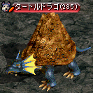
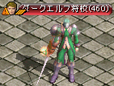
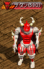
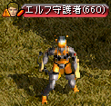

パーティーボスモンスター

・セミボスモンスターを倒すと、一定確率で特別なエフェクトが付随したパーティーボスモンスターが出現。
・パーティーボスモンスターを倒すと、同マップ内にいるパーティーメンバー全員にボーナス経験値が入る。
泡・離れた場所にいるメンバーも含む。
ただし、ボスモンスターとLv差が50以上のパーティーメンバーがいる場合、ボーナス経験値は入らない。
※ダークシャドウはLv差が25以上の場合。
・ボーナス経験値は、ベリーによる経験値アップの効果は適用されない。
・セミボスモンスターとパーティーボスモンスターは非アクティブ。
| セミボスモンスター | パーティー ボスモンスター |
出現マップ | ボーナス 経験値 |
|---|---|---|---|
 |
ダークシャドウ （Lv165） |
廃坑 Ｂ１０ 海の神殿 Ｂ３ パブル鉱山 Ｂ１ |
100万 |
 |
リッチ （Lv220） |
呪いの墓 Ｂ１ レッドアイ秘密基地 Ｂ２ 魔法傭兵の墓 Ｂ２ |
180万 |
 |
ソウルガーダー （Lv250） |
小さい傭兵の墓 Ｂ１ レッドアイ秘密基地 Ｂ３ 海の神殿 Ｂ４ |
250万 |
|  | タートルドラゴ （Lv285） |
キャンサーの巣 Ｂ４ レッドアイ秘密基地 Ｂ４ ミルトリムの道 / シュトラセラト入口付近 |
250万 |
 |
デスナイト （Lv305） |
スウェブタワー １１Ｆ レッドアイ秘密基地 Ｂ５ レッドアイ倉庫 過ぎた栄光の展示場 |
300万 |
 |
狂気の指揮官 （Lv365） |
フォーリン望楼 地下 ガディウス大砂漠 / モリネルタワー付近 デフヒルズ古代遺跡 B1 パブル鉱山 Ｂ２ |
310万 |
 |
デスピンサー （Lv400） |
暴かれた納骨堂 Ｂ１ デフヒルズ小さな洞窟 Ｂ１ デフヒルズ小さな洞窟 Ｂ２ バヘル大河 / 東バヘル川 バヘル台地 / エルベルグ山脈西部地域 |
350万 |
|  | ダークエルフ将校 （Lv460） |
ダークエルフ王宮 １Ｆ ゴリマ沼地 ネイダック平原 / ラカリフサ北部地域 ダークエルフ王宮への近道 西プラトン街道 / グレートフォレスト入口 |
390万 |
 |
悪夢のサソリ （Lv515） |
呪いを受けたミズナの洞窟 Ｂ１ 隠された収容所 南フォーリンロード / エルン山南部地域 東プラトン街道 / イースタンブリッジ付近 中央プラトン街道 / グレートフォレスト入口付近 |
430万 |
 |
火炎の鬼 （Lv545） |
兵営 B1 南フォーリンロード / テレット・トンネル出口付近 ダメルの地下迷宮 B1 西プラトン街道 / アリアン東部地域 ソゴム山脈 赤山登山路 |
430万 |
 |
ブレイマ （Lv560） |
名も無き遺跡 Ｂ２ ナラダ平原の沼地帯 / ノーススワンプ ルリリバー / 川河口 エルベルグ山脈 / ハノブ西部地域 地下界補給倉庫 |
470万 |
|  | サタン （Lv580） |
旅館 １Ｆ 東プラトン街道 / 道の中間地点 レッドアイ秘密基地 Ｂ６ ソゴム山脈赤山 クェレスプリング湖 |
470万 |
 |
ラットキング （Lv620） |
ビックマウスダンジョン Ｂ４ モリネルタワー 地上４階 北フォーリンロード / ビガプール南部地域 ブラックファイヤーダンジョン 埋もれた地下別荘 B3 |
510万 |
 |
オーガゼネラル （Lv660） |
ガルカス悪魔軍集結地 Ｂ１ ガディウス大砂漠 / デフヒルズ北側 ガルカス悪魔軍集結地 Ｂ２ 東プラトン街道 / エルベルグ山脈 峠 ハンヒ山脈 / ドレム川付近 |
510万 |
|  | エルフ守護者 （Lv660） |
時の森（1層目） 半島の海辺 北フォーリンロード / ネイダック平原地帯 疑問の森 北西部 |
550万 |
 |
ハゲワシ闘士 （Lv710） |
時の森（3層目） 時の森（2層目） 神秘の洞窟 Ｂ２ |
590万 |
 |
イーグルヘッド （Lv760） |
デフヒルズ西部地域 | 630万 |
 |
ケンタウロス （Lv810） |
タトバ山東部地域 | 670万 |
 |
金剛石ゴーレム （Lv860） |
ロングテール付近の狩場 | 760万 |